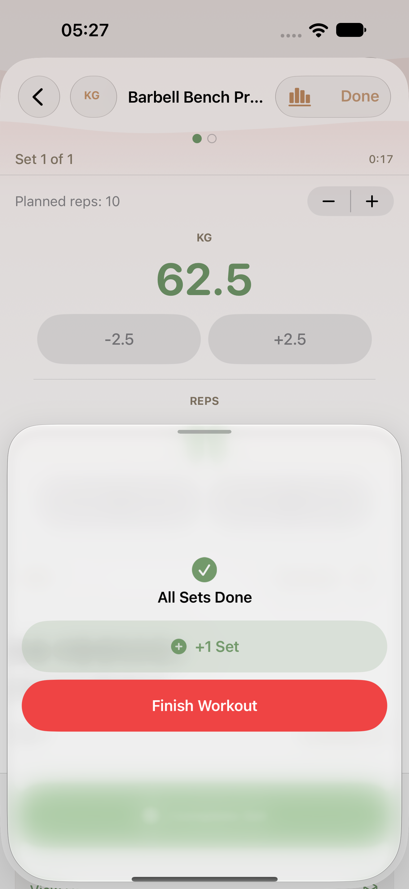
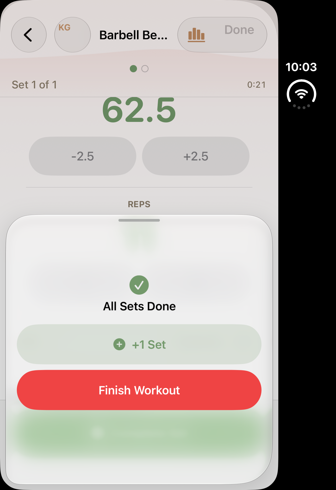
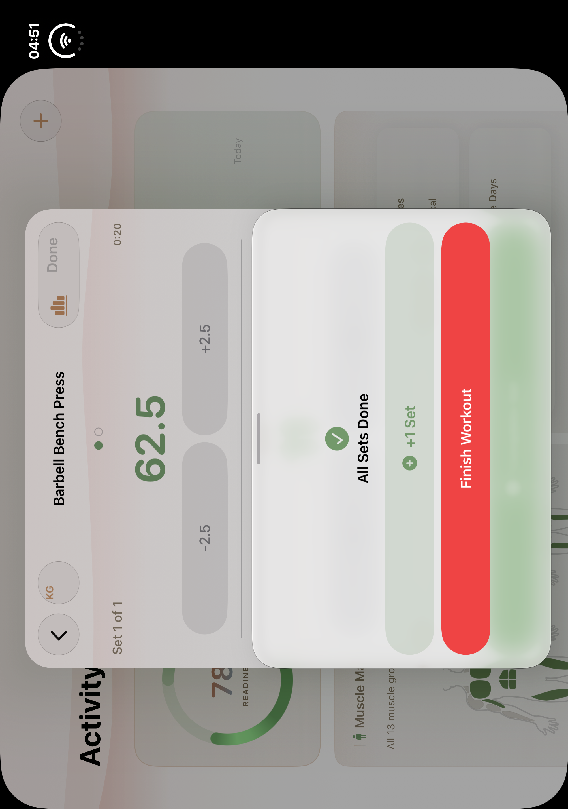
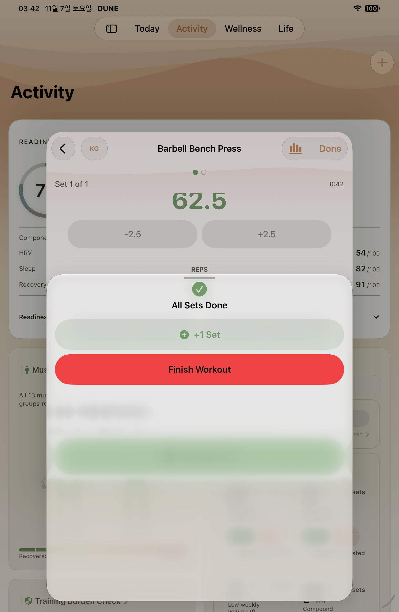
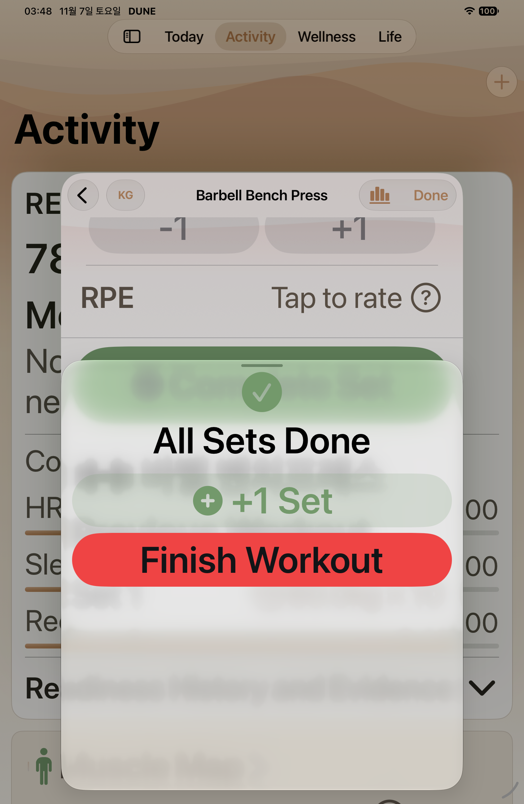

W31 HELD draft · B10 native gallery
Native PNG/AX pairs are classified by completed selector receipts. Historical captures and failure diagnostics are separate. See manifest for source revisions and limits.
Pending or limited- phone W31 normal medium last-set choices: named PNG/AX pair absent
- phone W31 normal large last-set choices: named PNG/AX pair absent
- phone W31 MAX medium last-set choices: named PNG/AX pair absent
- phone W31 MAX large last-set choices: named PNG/AX pair absent
- phone-retry1 W31 normal medium last-set choices: named PNG/AX pair absent
- phone-retry1 W31 normal large last-set choices: named PNG/AX pair absent
- phone-retry1 W31 MAX medium last-set choices: named PNG/AX pair absent
- phone-retry1 W31 MAX large last-set choices: named PNG/AX pair absent
- ipad W31 MAX initial last-set choices: named PNG/AX pair absent
- ipad-retry1 W31 normal initial last-set choices: named PNG/AX pair absent
- Duo closed/open current-source capture absent: owned device migration failed before SDK; historical baselines only
- Before-teardown failure attachments never count as passed W05/W06/W31 evidence
- W31HELDPhonecore: no medium/large/action/currentPNGAX; no3rdPhoneSDK; officialactualmap unchanged

regular · historical
W31 historical baseline
 ipad · historical
ipad · historical
W31 historical baseline

duo · historical
W31 historical baseline

duo-open · historical
W31 historical baseline

ipad · after
Initial last-set choices
AX tree
ipad · after
MAX initial last-set choices
AX tree